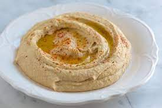

Humus

Description
Zeytinyağı, tahin ve taze sıkılmış limon suyunun da katkılarıyla haşlanmış nohuttan hazırlanan en güzel mezelerin başında gelir humus tarifi.
Tam olarak yurdunun neresi olduğuna dair kesin bir kanıt olmasa da humus ... HUMUS HUMUSTUR LAN
- 1 çay bardağı ılık su
- 1/2 (yarım) çay bardağı tahin
- 1 çay kaşığı kimyon
- 4 çorba kaşığı limon suyu
- 3-4 diş sarımsak (ezilmiş)
- Tuz
- Nohutlarınızı bir gece önceden ıslatın, düdüklü tencereye alın.
- Bir taşım kaynatın, çıkan köpüklü suyu dökün.
- tekrar sıcak su ekleyip düdüklü tencerenizde tam pişirin(hafif çatlasın ve kabukları kolay çıkabilecek hal alsın. Yaklaşık 15-20 dakika)
- Nohutların kabuklarını temizleyin, ölçüdeki nohudu elde edin..
- Kabuksuz nohutları,1,5 çay bardağı su ile orta derinlikte bir tencereye alın
- Tekrar ocağa koyun, tahta kaşıkla ezerek suyunu hafifçe çektirin. Ilınmış nohudunuzu el püre yapıcınızdan geçirerek pürüzsüz hal almasını sağlayın.
- Nohut katı bir hal alacak. (Bu aşamada derin dondurucuda saklayabilirsiniz)
- 2. kez kısık aılmasını sağlayın(1 dakika). Ateşten aldığınız sıcak nohuta tahin, limon suyu, ezilmiş sarımsak, tuz ve kimyonu ekleyin. Çok iyi karıştırın.
- Yumuşatın,teşe aldığınız nohuta 1 çay bardağı ılık su ekleyin.
- Üzerine incecik zeytinyağı gezdirin.
- Humus mezesini ılık servis yapın.
back to main menu